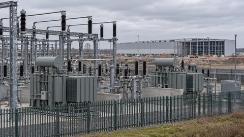

Market Analysis
Microsoft’s Reported Nscale Exit Puts Grid Access at the Center of AI Investment
Reports say Microsoft has left Nscale’s Loughton data center agreement. The project highlights the financial cost of capacity without timely grid power.